| 日付 | 2020年9月20日（日） - 2020年9月22日（火） | ||
|---|---|---|---|
| 山域 | 中央アルプス | ||
| メンバー | 家族（妻、長女・9歳、長男・7歳） | ||
| 山行形態 | 子連れ2泊3日キャンプ | ||
| アクセス | 車 | ||
| ルート (Map) |
|
今週末は4連休。週後半は西の方が比較的晴れそうなので、
恵那山に行ってみることにする。
前後の2日を移動日にあてキャンプ場2泊の予定で出発する。
1日目
本日は沢城湖ハートランド牧場のキャンプ場に宿泊。
直前の予約でほとんどのキャンプ場が埋まっていたが、
幸いこのキャンプ場の予約を取ることができた。受付を済ます。
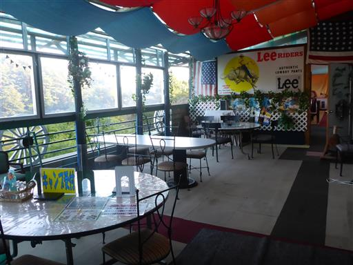
早速設営。直前の予約なのであまり良い場所は確保できなかった。
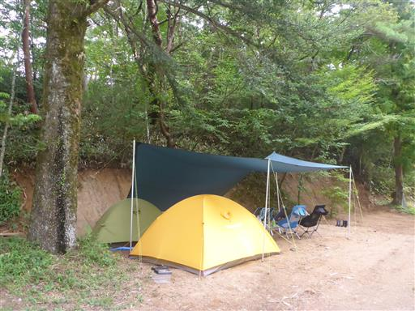
キャンプ場の真ん中に小さな池がある。釣りをしている人が多い。
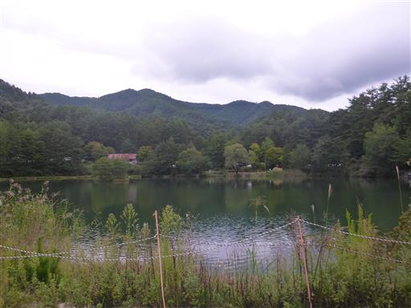
小さな牧場。乗馬体験ができるようだ。
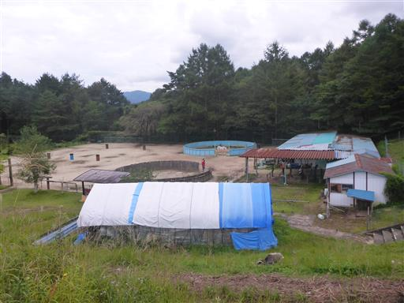
山の向こう側に日が落ちて空が赤く染まっている。
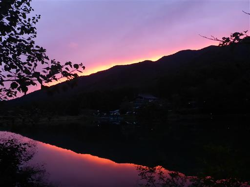
2日目
本日は恵那山登山。朝早く起きて6時にキャンプ場を出発。
7時前に駐車場に着いたが、すでに8割程度が埋まっている。標高1150m。
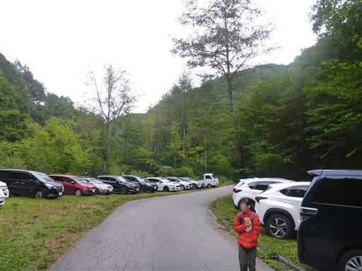
登山口までは40分ほど車道歩きが続く。

深い谷に付けられた車道を歩いていく。
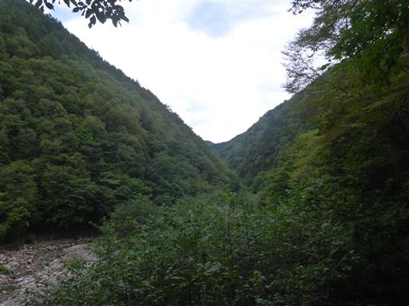
恵那山登山口に到着。
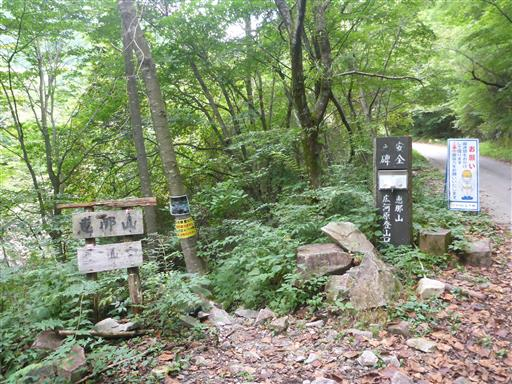
まずは沢を渡る。
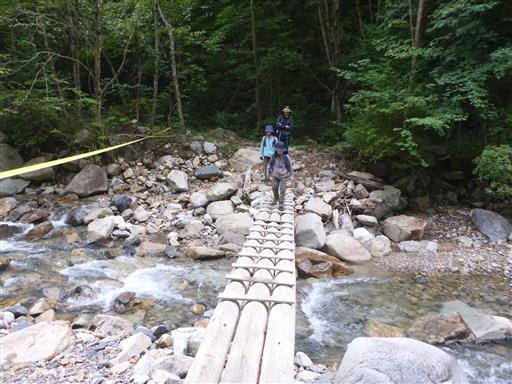
沢を渡ったら登りが始まる。
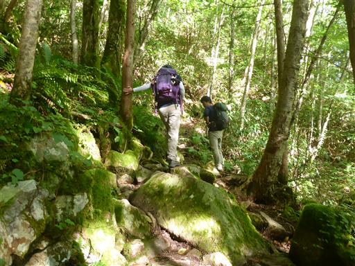
小さなキノコ。
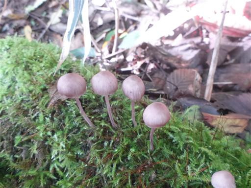
樹林帯の中の単調な道が続く。
この登山道はアップダウンが無く、登り一辺倒だ。
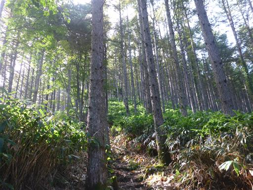
10分のいくつまで来たかの標識が置かれている。
単調な道だけに、こういったものはどれだけ登ったかの目安になってありがたい。
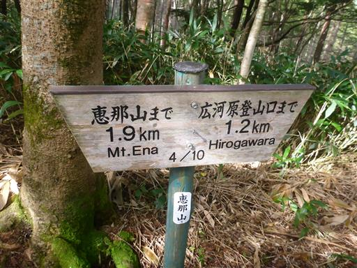
笹が繁茂している。背の低い息子は少し歩きにくそうだ。
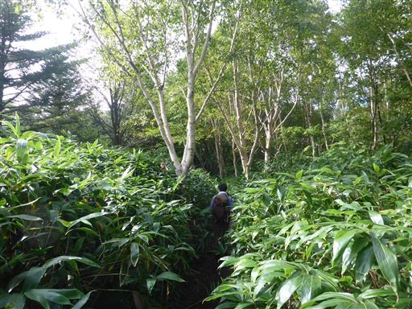
背後に南アルプスが見える。
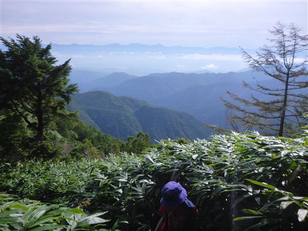
青空が広がり笹原が輝いている。少し高山らしい雰囲気が出てくる。
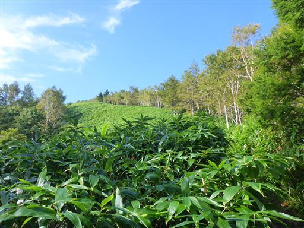
9/10に到着。あともう少しだ。
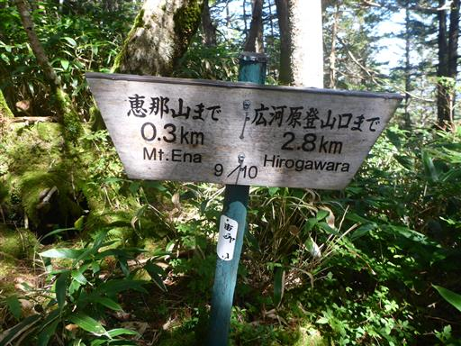
地面は岩が多くなってくる。それでも単調な登山道は変わらない。
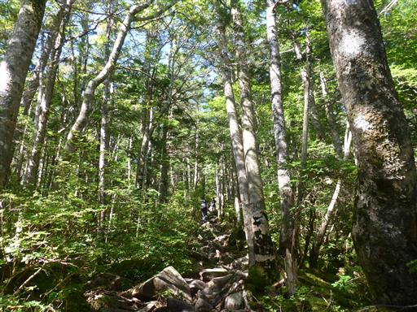
恵那山山頂に到着する。標高2191m。
長い登りだったが、ほとんど休憩することもなく、案外あっさり登頂できた。
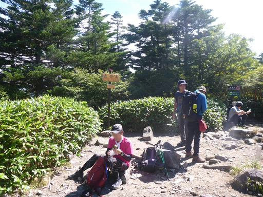
樹林に囲まれた山頂には展望櫓がある。
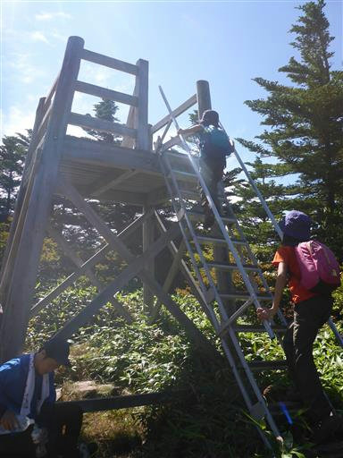
早速登ってみるが、周りの木が高すぎて見えるものに変わりはない。
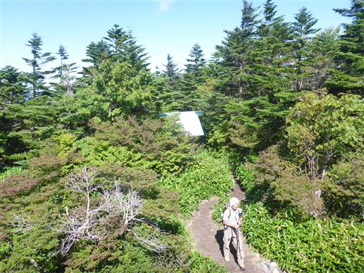
山頂直下には恵那神社奥宮がある。
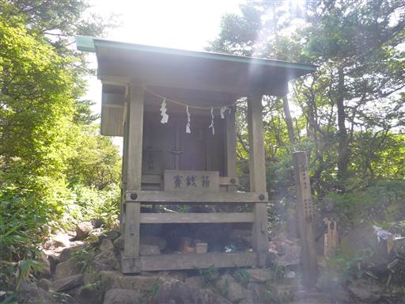
山頂からは展望が無かったので、展望を求めて避難小屋を目指す。
山頂周辺は広くて平らな尾根になっている。
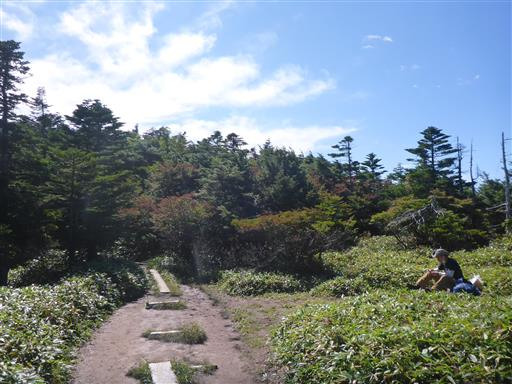
ところどころに小さな神社がある。
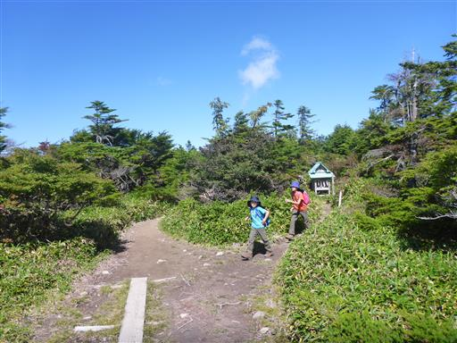
恵那山山頂避難小屋に到着。山頂よりもここの方が賑わっている。
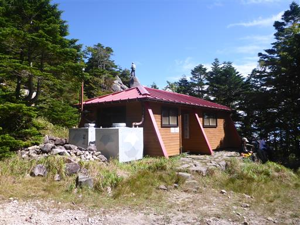
子供達は早速、小屋背後にある岩を登って行く。
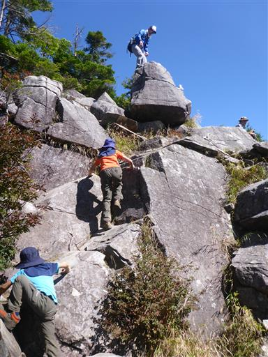
岩の上。ここが恵那山で一番展望のよさそうな場所だ。
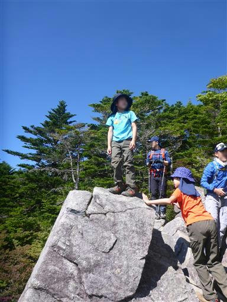
一直線に並ぶ南アルプスが見える。残念ながら展望が広がるのはこちらの方角のみで、
北アルプスも中央アルプスも望めない。
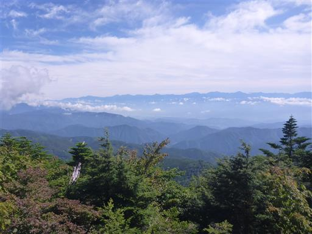
僅かに富士山の頭が見えている。
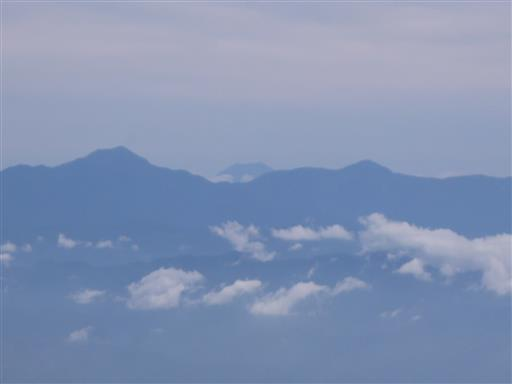
岩の上から見下ろす小屋前広場。
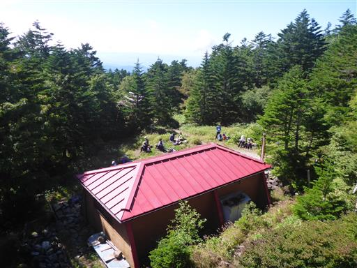
小屋の中を覗いてみる。比較的きれいな小屋だ。
朝早くから下山してきた人を何人か見かけたが、恐らくこの小屋に泊まっていたのだろう。
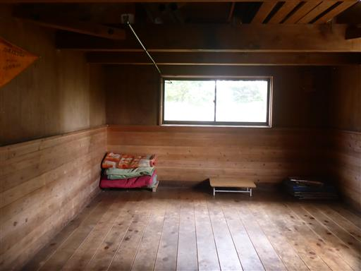
小屋前で昼食をとったら、来た道を下山する。
だいぶ雲が上がってきた。本日は晴れていたが快晴とはいかなかった。
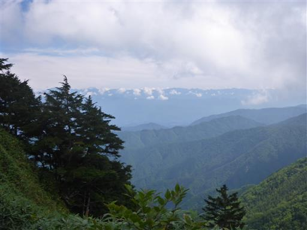
下山。沢に下りたところで少し休憩を兼ねて遊ぶ。
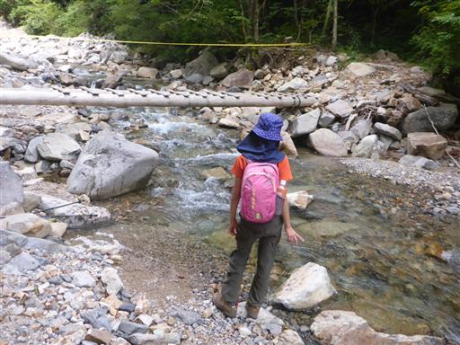
最後は車道歩き。
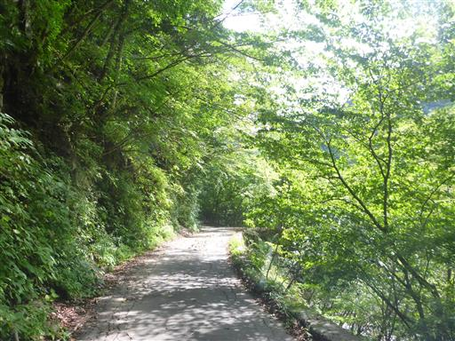
駐車場に到着。もう多くの車がいなくなっている。
恵那山は登山道も山頂も地味な山だった。
次来るときは神坂峠からの道を選択したい。
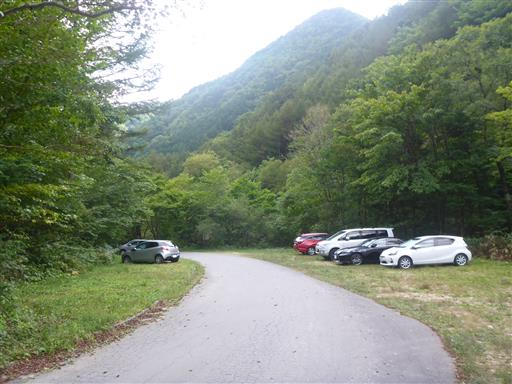
帰りは温泉・阿智の里ひるがみに立ち寄る。
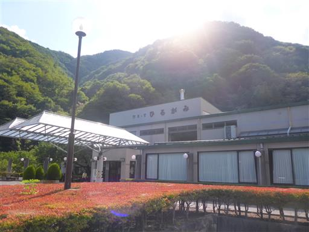
この辺りは昼神温泉街で旅館やホテルが立ち並んでいる。
それなりに多くの観光客が訪れている。
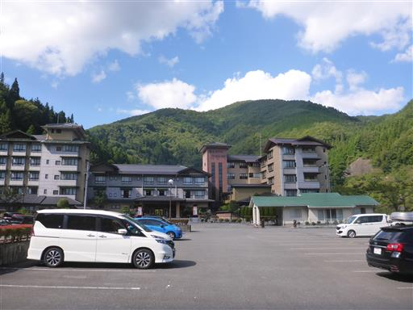
ショッピングタウンピアで買い物。
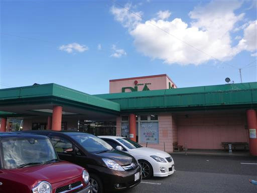
キャンプ場に戻ってくる。
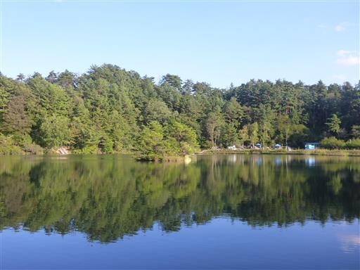
少し湖畔を散策。
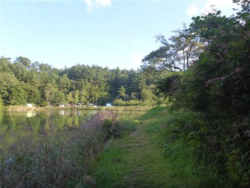
ボート乗り場の板はつぎはぎだらけ。ところどころ穴が開いているのが恐ろしい。
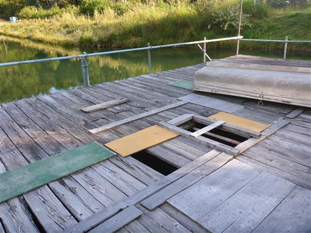
夜中の1時ごろに起きて星空を観察する。
あまり空は広くなかったが、そこそこ星の数は多かった。
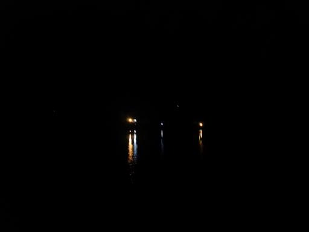
3日目
本日は帰るだけなのでゆっくり起床。
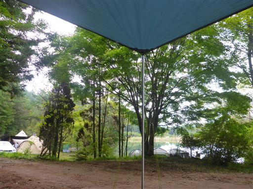
撤収中、子供たちは遊具で遊んでいる。

かなり年季の入った遊具だ。
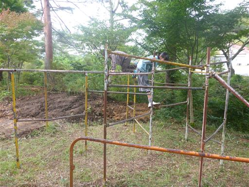
滑り台は滑ったら崩壊しそう。
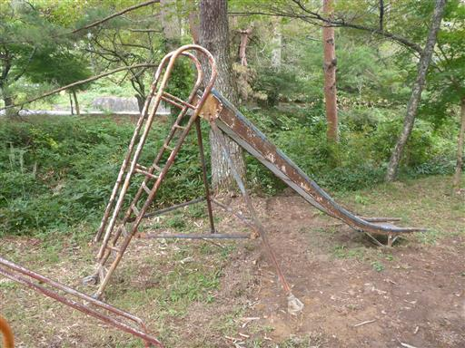
2泊お世話になったキャンプ場を後にする。
設備の割には少々高いキャンプ場だった。
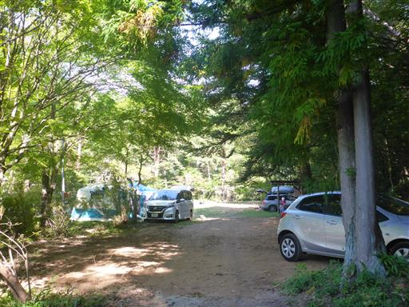
帰りに駒ヶ岳サービスエリアに寄り道。
展望台に行ってみたが木曽駒ヶ岳は見えず、見えるのはここでも南アルプスのみだ。
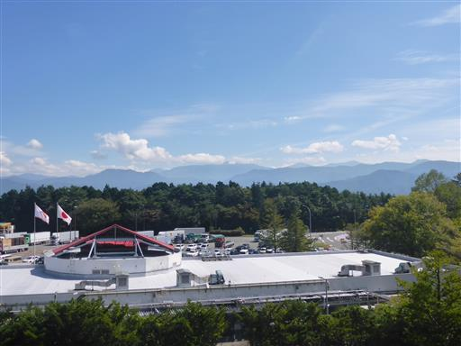
少し体を動かし、渋滞に備えて昼食を買って車に乗り込む。
思った以上に地味な山だったが、4連休にあまり混雑しないキャンプと山を楽しめて良かった。
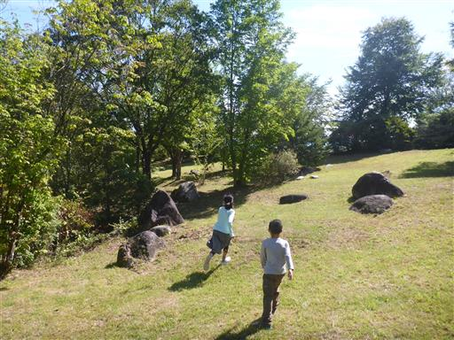